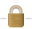

Each file format available in the Export Options panel and the Export dialog offers a variety of settings that affect the resulting file(s).
The following settings are available for all file formats, dependent on applicability to the export workflow that is in use.
| Export Options panel | Export dialog | |
|---|---|---|
|
Mode—with Selection enabled, the export options can be modified for the selected export area to be different from the default export option settings; Defaults, when enabled, sets the default export options for new slices. |
||
|
Preset—sets predefined export options for a range of common file formats, color modes, and bit depths. Select from the pop-up menu. |
||
|
(File) Format—sets the graphics format for the exported file. Select from the pop-up menu. |
||
|
Resample—select which resampling method to use if the image is to be upsampled or downsampled on export. For the PDF, SVG and EPS file formats, this setting is available when you select More. The following resample settings are available:
|
||
|
Area—instead of exporting the whole page, you can export the currently selected layer content, with or without other (deselected) layers, using the 'Selection Area' or 'Selection Only' options. To export drawn slices or specific layers, use Export Persona. |
||
|
Don't export layers hidden by Export Persona—when selected, layers which have been hidden while in Export Persona are excluded from the exported file even if they display on the page. If this option is off, all objects on the page (which are within the Area selected above) will be exported regardless of whether they are hidden in Export Persona. |
Availability of the following settings depends on the selected file format.
When using the Export dialog, many of these settings are only available when you select More.
SizeBy default, displays the native dimensions of your image. Type value(s) to set an alternative width and/or height for your exported image.
 Lock aspect ratio—when selected (default), the image's native aspect ratio is honored. If this option is off, the exported image's width and height can be set independently. | ||||||||||||
Raster DPIThis option lets you choose the resolution for rasterization for effects which will be rasterized on export. | ||||||||||||
RasterizeSelect an option for Rasterizing design elements which are unsupported by the file format. Select from the pop-up menu:
| ||||||||||||
Downsample imagesSelect whether to downsample raster images within the design. | ||||||||||||
Above (DPI)If this set DPI is exceeded by raster design elements, those elements will be rasterized down to this set DPI. This option is dependent on the Downsample images option being active. | ||||||||||||
Pixel formatSets the color mode for the exported image. Select from the pop-up menu. | ||||||||||||
Use document resolutionEnsures the export is the same DPI as the current project's setting. | ||||||||||||
Use DPIOverrides the current project's resolution setting for the export. The exported image's DPI is set using the adjacent input box | ||||||||||||
Allow JPEG compressionWhen selected, rasterized design elements will be compressed to decrease exported file size. If this option is off, rasterized design elements will be exported as uncompressed. | ||||||||||||
QualitySets the resulting quality of rasterized design elements in the exported image—or the overall image in the JPEG format's case. Higher quality may result in significantly larger file sizes. For the JPEG format, this is an independent setting. For the other formats, it is dependent on the Allow JPEG compression option being active. | ||||||||||||
MatteSets the background color for the exported image. Select from the pop-up panel. | ||||||||||||
ICC profileBy default, this is set to the ICC profile of the project (document). However, the project's ICC profile can be overwritten for this export area. Select from the pop-up menu. | ||||||||||||
Embed ICC profileWhen selected, the ICC profile is included within the exported image's data, allowing the image to be viewed using the correct profile on any device. If this option is off, the viewing device must possess the ICC profile otherwise a substitute profile is used. | ||||||||||||
Include bleedWhen selected, the bleed area of your document, if set, will be included in the PDF output. See Setting bleed. | ||||||||||||
PalletizedWhen selected, encodes the exported image by mapping it to the Palette and Colors settings set below. (This option cannot be switched off for GIF images.) | ||||||||||||
PaletteBy default, this is set to be automatically determined. However, you can specify an encoding palette yourself. Select from the pop-up menu. | ||||||||||||
ColorsSelects the number of colors available in the palette. Select from the pop-up menu. | ||||||||||||
(Use) Relative coordinatesWhen selected, objects in the exported file have relative positions for maximum editability. If this option is off, object positions are fixed to create a file which is optimized for viewing. | ||||||||||||
Embed metadataWhen selected, any raster image's original metadata is preserved in the exported file. If this option is off, all original metadata is removed; use this for privacy reasons or to reduce file size (for web use). | ||||||||||||
Export text as curvesWhen selected, the text in the resulting file will be drawn as curves (therefore displaying precisely as intended, even if viewed on a device without the used fonts installed). However, this option will increase file size, and text won't be editable as text or available to "text to speech" in other apps. If this option is off, text will be exported as text and the viewing device will need the used fonts installed for it to be displayed correctly. | ||||||||||||
ProgressiveWhen selected, the exported image is progressively compressed for optimized viewing when downloading. |
Convert clips to pathsWhen checked, converts top level clipping curves to vector paths. |
Save Affinity layersLayers in the document are preserved in the exported TIFF image. These layers will only be readable when the file is opened in an Affinity application. |
CompressionBy default, this is set to ZIP. Options to apply LZW compression or no compression are available. |
Compatibility modeWhen selected, the exported file will be compatible with other applications which do not support some features (file size may also increase). If this option is off, the exported file may not be readable by other applications (depending on the features used in the image). |
Smallest file sizesWhen selected, the exported file will be compressed where possible but may not be readable by other applications. If this option is off, no compression will take place for the exported file. |
Rasterize all layersWhen selected, layer content is rasterized in the exported file (the layer structure is retained). If this option is off, no rasterization takes place on export. |
GradientsThis setting offers two strategies for how to export this specific project attribute. Select from the pop-up menu.
|
Layer effectsThis setting offers two strategies for how to export this specific project attribute. Select from the pop-up menu.
|
LinesThis setting offers two strategies for how to export this specific project attribute. Select from the pop-up menu.
|
AdjustmentsThis setting offers two strategies for how to export this specific project attribute. Select from the pop-up menu.
|
Adv BlendingThis setting offers two strategies for how to export this specific project attribute. Select from the pop-up menu.
|
Preview export when completeOpens the exported file in your device's default PDF viewer. |
CompatibilitySets the version and type of PDF to be exported. Select from the pop-up menu. |
Color SpaceChoose whether to use the document's current color space or export using a selected color space. Select from the pop-up menu. |
ProfileChoose whether to use the document's current color profile or export using a specific color profile. Select from the pop-up menu. |
Embed profilesWhen selected (default), the chosen (or document's) color profile will be embedded in the exported file. If this option is off, the exported file will not have the color profile embedded with it (the viewing device will need to have the appropriate color profile installed to view the exported PDF accurately). |
Convert image color spacesWhen checked, all placed images will convert to the color space chosen on export (as set in the Profile option above). When unchecked, the color space of the imported placed image is honored. |
Honor spot colorsWhen selected, spot colors within the design are exported as spot colors. If this option is off, spot colors are converted to an equivalent color within the exported file's color space (see above). |
Overprint blackWhen selected, design elements which use CMYK black are set to overprint. If this option is off, CMYK black elements are set to be indistinguishable to other colors during printing. |
Include hyperlinksWhen selected, the PDF output will include all created hyperlinks. |
Include bookmarksWhen selected, PDF bookmarks are included in the PDF output. (Primarily used when working on Affinity Publisher documents in Affinity Designer or Affinity Photo.) |
Include layersWhen selected, the PDF output will include all created layers. |
Include printers marksWhen selected, the PDF output will show printer marks around the page edge. All printer marks are added by default. However, particular types of printer marks can be switched off, depending on your preference. These include:
|
Embed fontsSelect an option for handling fonts used in the document.
|
Subset fontsWhen selected, embedded fonts will only include the glyphs used in the document. If this option is off, all glyphs for the used fonts are embedded in the exported file, regardless of whether they appear in the document or not. |
Allow advanced featuresWhen selected, all design features supported by the PDF file format are exported as vectors. If this option is off, depending on the nature of these features, they are rasterized or converted to curves on export. These features include:
|
Export text as curvesWhen selected, the text in the resulting file will be drawn as curves (therefore displaying precisely as intended, even if viewed on a device without the used fonts installed). However, this option will increase file size, and text won't be editable as text or available to "text to speech" in other apps. If this option is off, text will be exported as text and the viewing device will need the used fonts installed for it to be viewed correctly. |
Longer text spansWhen selected, text is placed relative to previous lines of text (therefore producing smaller file sizes and simpler file structures). If this option is off, text is placed with absolute coordinates |
Use hex colorsWhen selected, colors in the exported file are expressed as RGB Hex values (therefore reducing file size but less human-readable). If this option is off, colors are exported as standard RGB values. |
Flatten transformsWhen selected, transformed objects are 'fixed' in the exported file. This allows for the file to be viewed more accurately across applications. If this option is off, objects remain dynamically transformed to allow for more flexible editing. |
Use tile patternsWhen selected, rasterized areas may be converted to a vector shape with a filled bitmap to give smoother, sharper edges. However, this might not be supported by some apps. If this option is off, objects will exist as singular elements within the exported file. |
Set viewBoxWhen selected, the exported file includes coordinates and dimensions which define the view box of the image. If this option is off, no view box data is included in the exported file. The export area is used to define the view box. |
Add line breaksWhen selected, the code in the exported file will be optimized for human viewing and reading. If this option is off, the image will be exported with code on a single line which will make the file size significantly smaller. |
Enhanced Windows MetafileWhen checked, the exported file with be in EMF format. When unchecked, the export file will be in WMF format. |
Clip TransparencyWhen checked, any transparent area around your content is absent in the exported file. When unchecked, the transparent area is retained. |
PostScript levelSets the version of the exported PostScript file. Select from the pop-up menu. |
Minimize sizeWhen selected (default), the exported file will be compressed to create the smallest file size possible. |
Color profile from nameThis is dependent on OpenColorIO. With a valid configuration, appending the filename during export will convert to that color space from scene linear. For example, name your file output acescg.exr to convert to ACEScg if your OCIO configuration lists that as a valid color space. |
Multi channelWhen exporting to OpenEXR format, converts layers with affixes—e.g. .RGB or .RGBA after the layer's name—back to multi channel data. |
Include unknown channelsWhen checked, channels whose type cannot be determined will still be exported as a single luminance-based channel. |
Image pixelsChoose whether to encode Image channels (RGBA etc) as 16-bit (half float) or 32-bit (full float). |
Spacial pixelsChoose whether to encode Spatial channels (XYZ etc) as 16-bit (half float) or 32-bit (full float). |
Other pixelsChoose whether to encode other/undetermined channels as 16-bit (half float) or 32-bit (full float). |